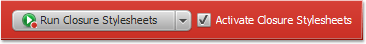
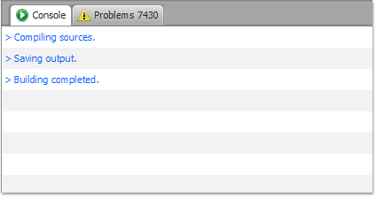
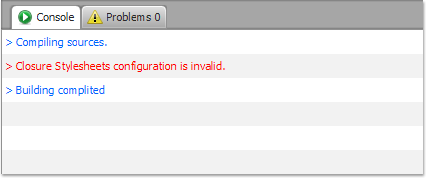
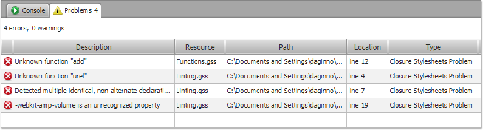

- Open your Build Configuration and choose Stylesheets page.
- On the Stylesheets page, find Run Closure
Stylesheets button and press it to run the Stylesheets.

- Notice that the Stylesheets has finished running and the
following message appears in the Console
view telling you that building has finished.

- The Stylesheets also reports compilation errors to the
console.

- Use Problems view to review
and manage errors and warnings related to the passed code.

The Run command is also available in other places, such as the
main toolbar. You also can use Ctrl+R
(Windows, Linux) and Cmd+R (Mac)
key binding. In this case, all of the activated Stylesheetss will be
launched.
Use Run
button to launch and relaunch the Stylesheets using current buildpath
and options.
Use Cancel button to stop the Stylesheets.